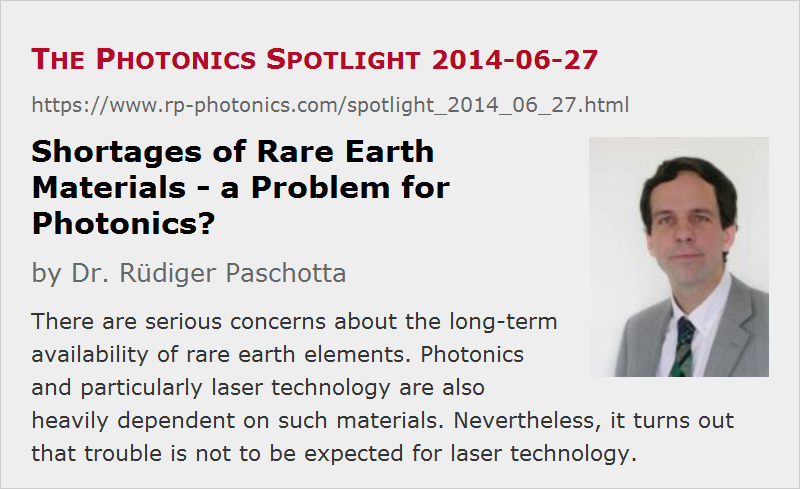

Shortages of Rare Earth Materials – a Problem for Photonics?
Posted on 2014-06-27 as a part of the Photonics Spotlight (available as e-mail newsletter!)
Permanent link: https://www.rp-photonics.com/spotlight_2014_06_27.html
Author: Dr. Rüdiger Paschotta, RP Photonics Consulting GmbH
Abstract: There are serious concerns about the long-term availability of rare earth elements. Photonics and particularly laser technology are also heavily dependent on such materials. Nevertheless, it turns out that trouble is not to be expected for laser technology.

Ref.: Marcius Extavour, “Rare Earth Elements: High Demand, Uncertain Supply”, Optics and Photonics News 22 (7), 40 (2011); editorial “The new oil?” of Nature Photonics 5, 1 (2011)
As an introductory remark, this article presents an example for issues where a first glance suggests certain conclusions which then turn out to be wrong when taking a closer look. Therefore, I recommend to read this to the end, if you are interested!
In recent years, there has been a growing awareness of the fact that various technology sectors heavily depend on certain materials for which a reliable long-term supply at reasonable prices is not guaranteed. Specifically, rare earth elements (REE) are more and more widely used in diverse technological sectors, while various sites worldwide have closed their production; about 95% of the total worldwide production is now in China, which uses more and more of these materials for its own production. That situation creates a concern in other countries about a dependencies which might be exploited, particularly in case of political tensions. In fact, that has already happened in 2011 in a dispute with Japan, which lead to rocketing REE prices on global markets.
The Use of Rare Earth Elements in Photonics
In laser technology and other fields of photonics, we also heavily depend on rare-earth materials – mostly not in the form of rare earth metals, but in non-metallic forms. In particular, various rare earth ions like Nd3+, Yb3+, Er3+ and Tm3+ are essential laser-active dopants in laser crystals and glasses as used e.g. in rare-earth-doped fibers. Furthermore, even the host materials often are rare earth materials – in particular, yttrium as a constituent of YAG (yttrium aluminum garnet) and vanadates like YVO4. Besides, rare earths like europium and cerium are contained in phosphors for lighting applications and displays, and cerium is used for optics polishing agents. Various modern optical clocks utilize rare earth ions as optical frequency standards.
The situation is reminiscent of that in electronics, where some other rare elements like gallium, indium, tantalum and niobium fulfill essential functions.
Are We Facing Big Trouble?
Based on these facts, serious concerns have been raised, fearing troubles for the whole photonics industry if we don't either secure more reliable REE sources or learn to replace rare earth metals with other elements, where the supply situation is less critical. For example, an OPN article of Marcius Extavour (see the reference above) in 2011 created that impression. He named recycling efforts as a possible path, and even raised the idea that rare-earth-free solid-state lasers might be needed in the future, and stated: “With myriad laser technologies available today, rare-earth-free solid-state lasers are certainly a practical alternative.” My opinion is that in most cases they would certainly not be a practical alternative, as that would imply e.g. that we essentially give up all well-working fiber lasers – but what could replace ytterbium-doped fiber lasers and erbium-doped fiber amplifiers, for example?
Given this doubt, you may now think that I consider the situation even more threatening than Extavour and other authors described it. That is not the case, however. In particular, I believe that Extavour and other authors did not sufficiently take into account that although photonics and in particular laser technology are indeed critically dependent on REE, only tiny amounts of them are needed in photonics – in particular, for most essential functions such as laser-active ions:
- As an example, consider an Yb-doped double-clad fiber as used in high-power fiber lasers and amplifiers; this contains only of the order of 5 μg ytterbium per meter of fiber for a typical doping concentration and core size. So you if you need 10 m for a laser, it is just 0.05 mg – close to nothing.
- We need substantially more when using a laser crystal with a rare-earth host medium. Let's consider a Nd:YAG crystal with dimensions of 10 mm × 2 mm × 2 mm and a concentration of 1 % wt (by Nd2O3). That contains around 1.6 mg of neodymium.
- About the worst case is a 150 mm long and 10 mm thick Nd:YAG rod for a lamp-pumped laser, which may contain several hundred milligrams of neodymium, and more importantly tens of grams of yttrium.
- A color TV screen may contain around 1 g of europium.
- Compare all that with neodymium content of an electric generator or motor in an electric car or hybrid engine car – this may easily be of the order of 1 kg. It's in the neodymium magnets, which could in principle be replaced with other materials, but at the cost of larger size and/or lower efficiency.
- Some wind energy generators contain even much more neodymium; only, there are not so many of them.
These examples demonstrate that in photonics and particularly in laser technology we use only tiny amounts of rare earth elements, which make up only a tiny fraction of the overall demand. And that changes the conclusions in essential ways. Even if China would suddenly stop exporting any rare earth elements, a small portion of the smaller REE production of other countries would suffice to meet the whole demand of photonics. As we a talking about high-value applications requiring tiny amounts, the price of a gram of REE essentially does not matter; we will always have enough for such purposes. The situation is entirely different for applications like magnets (e.g. NdFeB in neodymium magnets), where you (a) need much more and (b) cannot pay excessive prices.
In the longer term, we will also probably see new mines in various countries; only this takes some time, and efforts have started only recently, after a long time where the demand was simply not sufficiently high to amortize big investments.
How about recycling? This is certainly a wise thing to do, where large amounts of REE remain packed into compact devices. For example, it would be more than silly not to recycle the neodymium content of the generators and motors of cars, where you can hold with two hands a machine containing 1 kg or more. On the other hand, it is hard to see how recycling of rare earth elements from laser crystals or even active fibers could have a significant impact, except perhaps for the yttrium in the bigger laser crystals.
My conclusion is that there may well be trouble ahead with the supply of rare earth elements, but not for laser technology. The sectors which might be hit are those requiring large amounts – for example, catalysts and magnets. Some sectors of photonics may also be affected to a smaller extent – perhaps the display and lighting sector requiring phosphors. For polishing of optics, we may have to use alternatives to cerium, which however should not be a major problem.
Environmental Concerns about Rare Earth Mining
As a side remark, there are substantial environmental concerns about the mining of rare earth materials. Again, however, it makes a big difference whether you need some milligrams for a device or kilogram amounts. Therefore, good ways to counteract serious pollution issues are not developing rare-earth-free lasers, but building better mines and possibly more efficiently using (and recycling) REE at those places where a lot is used.
This article is a posting of the Photonics Spotlight, authored by Dr. Rüdiger Paschotta. You may link to this page and cite it, because its location is permanent. See also the RP Photonics Encyclopedia.
Note that you can also receive the articles in the form of a newsletter or with an RSS feed.
Questions and Comments from Users
Here you can submit questions and comments. As far as they get accepted by the author, they will appear above this paragraph together with the author’s answer. The author will decide on acceptance based on certain criteria. Essentially, the issue must be of sufficiently broad interest.
Please do not enter personal data here; we would otherwise delete it soon. (See also our privacy declaration.) If you wish to receive personal feedback or consultancy from the author, please contact him e.g. via e-mail.
By submitting the information, you give your consent to the potential publication of your inputs on our website according to our rules. (If you later retract your consent, we will delete those inputs.) As your inputs are first reviewed by the author, they may be published with some delay.
|  |
If you like this page, please share the link with your friends and colleagues, e.g. via social media:
These sharing buttons are implemented in a privacy-friendly way!